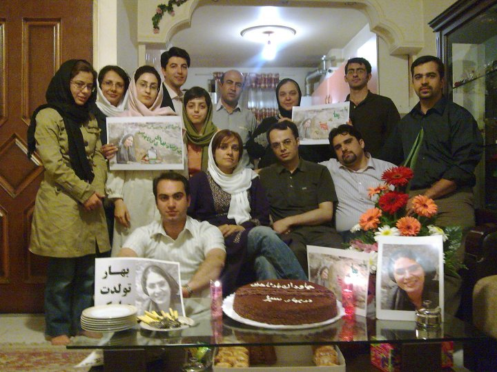
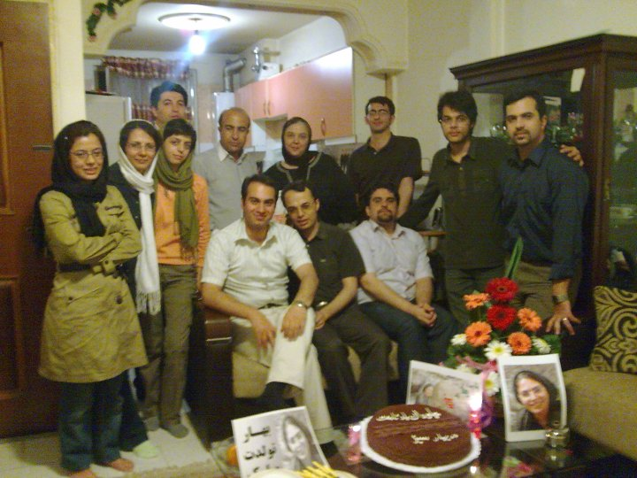
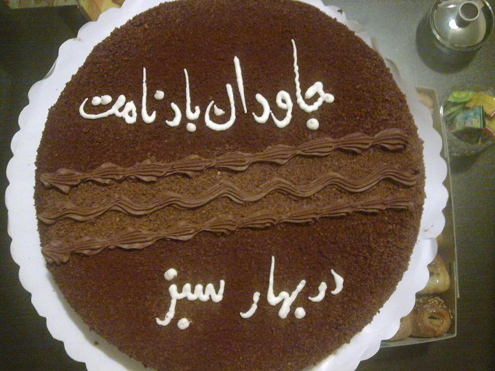
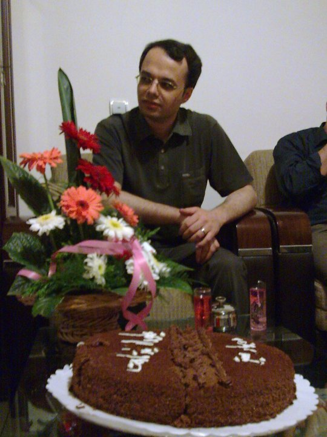
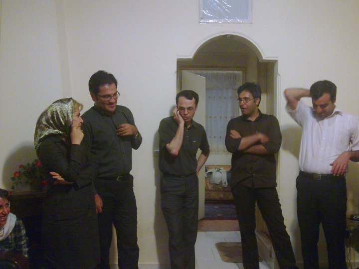
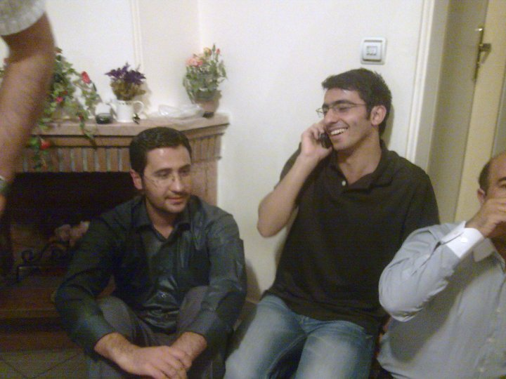

|
|
|
Browsing
Contact Us |
Campaigners |
Face to Face |
Tribune |
Interview |
News |
On the Web |
One Million |
Report
Farsi | Français | German | Italian | Spanish | العربية Also in this section
|

Imprisoned Activist Bahareh Hedayat Nominated for Student Peace Prize; Celebrates Birthday in PrisonFriday 9 April 2010 Change for Equality: Bahareh Hedayat, student and women’s rights activist and also an activist with the One Million Signatures Campaign, celebrated her birthday on April 5 in prison. Bahareh was arrested on December 27, 2009. Bahareh’s arrest occurred in relation to her student activities and her defense of human rights, especially in speaking out against the brutal treatment of dormitory students after police and security officials stormed university grounds in the midst of the turmoil following the disputed presidential elections. Bahareh a member of the Central Council of the Office to Foster Unity a student organization has played a critical role in the student movement. She along with several other female students have also played a critical role in bringing attention to the needs of female students in the University environment and also protesting quotas limiting the entrance of female students into university or mandating female students to attend university only in their own home towns—policies adopted during Ahmadinejad’s presidency intent on reducing the number of female university students, which currently stands at over 60 percent. Bahareh and Milad Asadi, another member of the Central Council of the Office to Foster Unity are currently in prison. Asadi was arrested on November 30, 2009 and remains in detention. Several other members of the this student organization have been arrested following the presidential elections, but have since been released on heavy bail amounts. It should also be noted that Bahareh was nominated to receive the Student Peace Prize by the European Student Union. The website of the European Student Union explains their decision to nominate Bahareh for the Student Peace Prize as follows: ”Bahare Hedayat’s extraordinary courage and her persistent defense of students’ right to freedom of speech and expression are the reasons we are nominating her for the Student Peace Prize 2011”, says Ligia Deca, Chairperson of the European Students’ Union.” Read more about the decision of the European Student Union to nominate Bahareh for the Student Peace Prize on their site. The site also provides biographical information about Bahareh Hedayat. A group of Bahareh’s friends and activists from the student and women’s movement gathered at her home on April 5 to celebrate her birthday. Bahareh, who is now being held in the public women’s ward at Evin’s prison, managed to call home during the gathering and spent a few minutes talking with her family and friends. As a birthday present her cellmates donated their telephone time to Bahareh, so that she would have time to talk to her husband, Amin Ahmadian, as well as her friends. Below are pictures of the Bahareh’s birthday celebration which was held in her absence.





 |